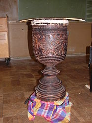

The dabakan is a single-headed Philippine drum, primarily used as a
supportive instrument in the kulintang ensemble. Among the five main kulintang
instruments, it is the only non-gong element of the Maguindanao ensemble.
The dabakan is frequently described as either hour-glass, conical, tubular, or
goblet in shape Normally, the dabakan is found having a length of more than two
feet and a diameter of more than a foot about the widest part of the shell.The
shell is carved from wood either out of the trunk of a coconut tree or the wood
of a jackfruit tree which is then hollowed out throughout its body and stem.
The
drumhead that is stretched over the shell is made out of either goatskin,
carabao skin, deer rawhide, or snake/lizard skin, with the last considered by
many dabakan practitioners as the best material to use.
The drumhead is then
fastened to the shell first via small metal wire and then using two hoops of
rattan very tightly to allow the rattan sticks to bounce cleanly. Artists,
especially the Maranao, would then carve the outside of the shell with elaborate
and decorative okkil patterns.
Technique:
The dabakan is normally played while standing with the player holding two sticks
made either out of rattan or bamboo but the player could be sitting or kneeling
instead.
The rattan strips are held parallel to the surface of the drumhead and
are then pivoted between the thumb and forefinger using the wrist to activate
them to strike the drumhead’s surface along the entire length of its diameter.
The sounds produced are normally quick and muted and thanks to the flexibility
of the strips, one could employ dampening, roll, or open stroke patterns upon
its surface.
Thanks to the exposure of many artists to western culture, new styles of playing
have emerged among the newer generation of players. These include playing
rhythmic patterns for the dabakan not on the surface of the drumhead but on the
sides of the shell and even at the edges of the drum’s mouth.
These
exhibition-style pieces are used to shift focus away from the melody instrument,
the kulintang, and onto the other supportive instruments such as the dabakan.

Uses:
The main use for the dabakan in Maguindanao and Maranao society is as a
supportive instrument in the kulintang ensemble, keeping the tempo of the
ensemble in check like the babendil.
On most rhythmic modes, such as sinulog and
duyog, the dabakan enters after babandil but in tidto, where the babendil is
absent, the dabakan always starts the piece. The Maguindanao and the Maranao
usually position the dabakan to the right of the kulintang player, near the end
of its frame, during a traditional performance.
The dabakan could be used in other types of playing other than the ensemble. The
dabakan could be used as the accompaniment for the kutiyapi, a type of
Philippine boat-lute.
The dabakan plays a major role in a type of playing known
as Kasorondayong. In the Maranao version, which is in recognition of their
prince hero, Prince Bantogen, two dbakan players face one another, standing
behind their dabakans, striking them with two slender bamboo sticks while
playing an interlocking rhythm.
Traditionally, the dabakan is considered a masculine instrument by the Maranao
and a feminine instrument by the Maguindanao but as a sign of the times, one
could see both men and women handling the dabakan.
In wooden kulintang
ensembles, the takemba, a bamboo zither of the Manobo, is usually substituted
for the dabakan part.
During older times, the bigger, longer double-headed dabakan, known as a
dadabooan, would be hung horizontally in the mosque would hit the drum
repeatedly announcing the beginning of prayer time throughout the outerlying
areas.
As a sign of the times, the dabakan in Mindanao have now been replaced by
more modern equipment such as a speakerphone but the practice still continues in
places like Sulawesi, where a mesigit, equivalent to the dabakan, would be used
for the same purpose.
Origin:
The origin of the name “dabakan,” is said to have been borrowed and adapted from
the Middle East. Dabakan is derived from the word, dbak meaning to “hit, strike,
or beat,” meaning that the dabakan is something upon which you hit.
Scholars
also suggest that another clue is that the dabakan may have been an adaptation
and enlargement of a pan-Arabic goblet drum, the dombak/tombak.